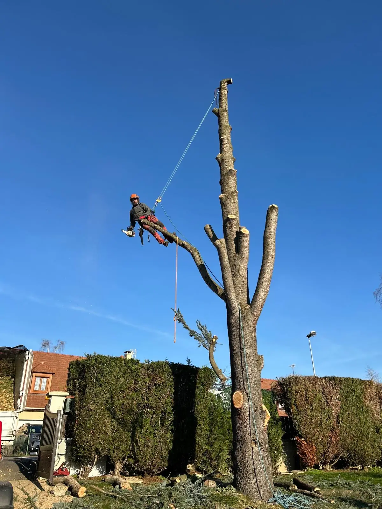
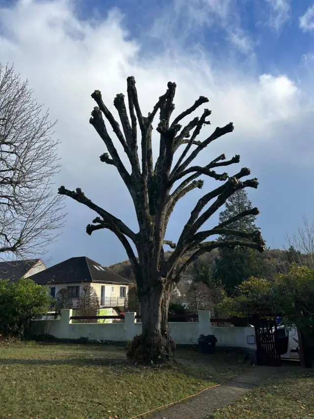
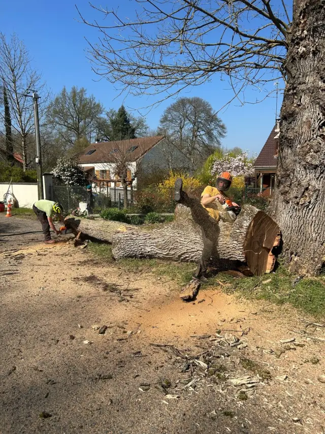
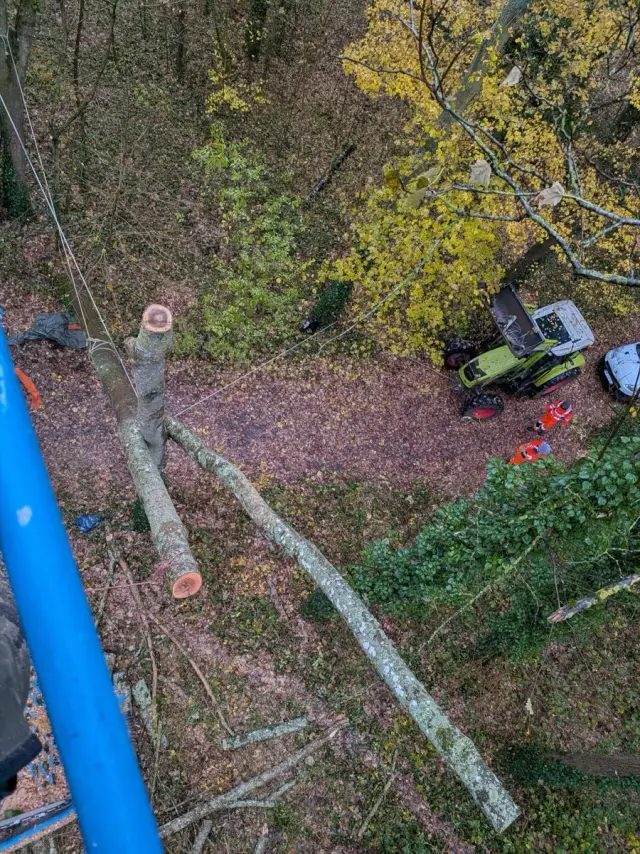
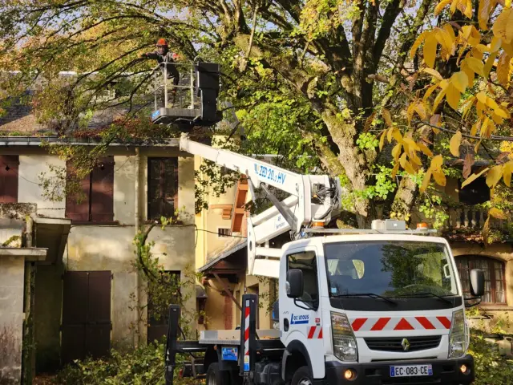
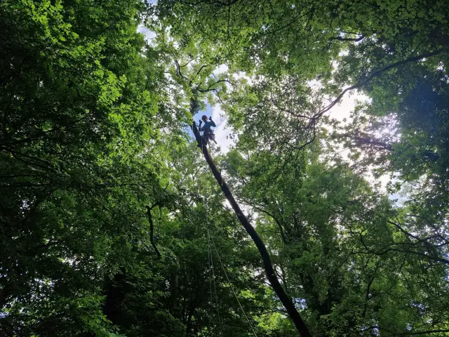
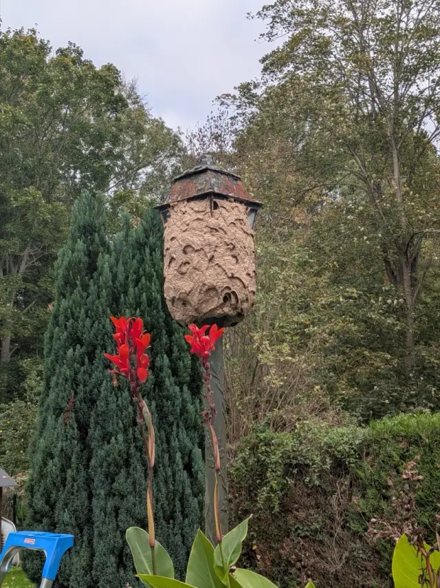
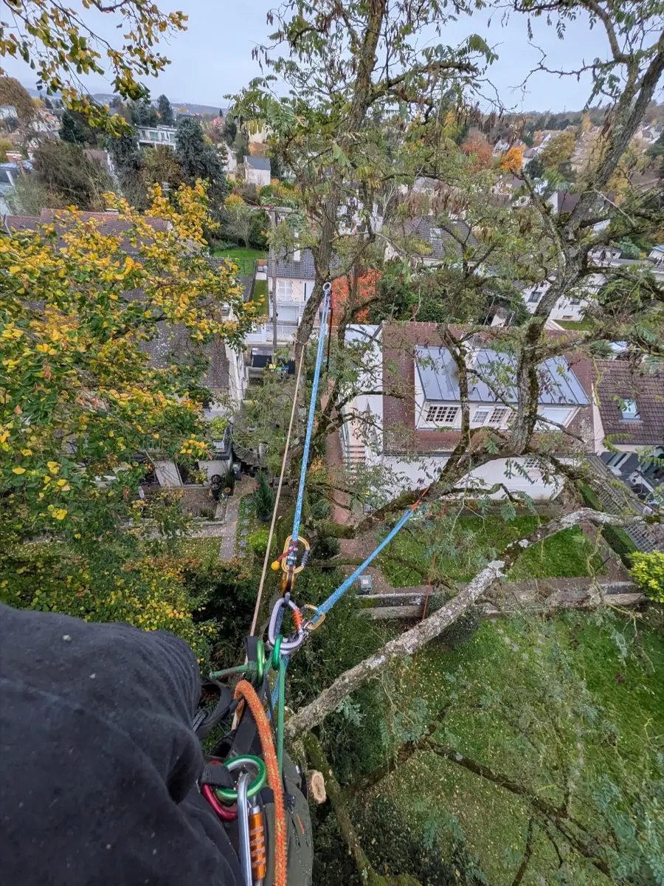

CimeArboriste grimpeur · Essonne
Élagage et abattage d'arbres à Cerny et alentours
Maxence Cardon monte sur corde ou travaille en nacelle pour tailler, sécuriser ou abattre vos arbres, même collés à la maison. Devis gratuit, réponse sous 24 h.
5,0 · 14 avis Google
HouppierPrestations
Ce qu'on fait là-haut
Six interventions, un même principe : enlever ce qui gêne ou menace, garder l'arbre en bonne santé quand c'est possible, et le descendre sans casse quand il doit partir.
-

Élagage et taille
Taille douce, réduction de couronne, taille en têtard. On allège sans défigurer.
-

Abattage
Arbre mort, malade ou devenu dangereux : abattage direct quand la place le permet.
-

Démontage par rétention
L'arbre ne peut pas tomber d'un bloc ? Il descend morceau par morceau, retenu à la corde.
-

Travail en nacelle
Si le camion peut approcher, la nacelle gagne du temps sur les grands sujets.
-

Soins aux arbres
Bois mort, branches fendues, couronne trop chargée : on observe, on retire, on vous conseille pour la suite.
-

Nids de guêpes et frelons
Abeilles, bourdons, guêpes, frelons : enlèvement et traitement des nids.
CharpentièresChantiers
Des photos de chantier, prises sur place
- Tronçon retenu à la corde, vu de la cime
- Nacelle déployée au fond d'un jardin
- En tête d'arbre, au-dessus des toits
- Fût démonté, bûches au pied
- Nid de frelons autour d'un nichoir
- Nacelle à quelques mètres de la maison
- Corde installée dans le houppier
- Bois débité et aligné sur la pelouse
- Deux bouleaux, cordes en place
- Depuis le panier de la nacelle
- Tronc couché, prêt à débiter
- Nacelle dans les feuilles d'automne
TroncL'arboriste
Maxence Cardon, grimpeur installé à Cerny
Instinct Élagage, c'est Maxence. Il vient voir l'arbre, il le grimpe et il rend le jardin propre. Ses clients le décrivent comme ponctuel, honnête et de bon conseil, avec un vrai respect pour les arbres qu'il taille.
« Grande connaissance des arbres, élagage respectueux de leur bien être. »
Estelle C., avis Google

-
01
Vous appelez
Ou vous remplissez le formulaire. Une photo de l'arbre aide déjà beaucoup.
-
02
Visite et devis gratuit
Maxence passe, regarde l'accès et vous dit ce qu'il ferait. Devis sans engagement.
Devis correct, ponctuel, sympathique
Erik Z. -
03
Le jour du chantier
Corde ou nacelle selon l'arbre. Le rendez-vous fixé est tenu.
Rendez-vous respecté
Françoise N. -
04
Jardin rendu propre
Branches ramassées, bois laissé ou évacué selon votre choix.
Travail toujours très propre
Estelle C.
ColletAvis clients
14 avis sur Google, tous à 5 étoiles
« Si je pouvais mettre 15 étoiles je les mettrais sans hésiter. »
Patricia T., après l'abattage de son chêne
Que dire de plus quand tout est parfait. Sérieux, ponctuel, professionnel, attentionné, honnête […] Abattage de 3 gros frênes de plus en plus menaçants, dont un immense.
David M.Je recommande sans réserve ! Devis correct, ponctuel, sympathique, travail impeccable, professionnel ! Ça fait 2 fois, en 2024 et septembre 2026.
Erik Z.Grande connaissance des arbres, élagage respectueux de leur bien être. De bon conseil. Travail toujours très propre, dans les délais et excellent rapport qualité prix.
Estelle C.Rendez-vous respecté, professionnel agréable qui a fait du bon travail et donné des avis pertinents, prix raisonnable. Que demander de plus !
Françoise N.Entreprise très professionnelle, très réactive sur les demandes urgentes, vous pouvez y aller les yeux fermés !
Mathias N.Très professionnel à l'écoute de vos demandes. Travaux effectués juste parfait.
Alexandre L.Entreprise d'élagage au top !! Travail soigné.
Thomas M.
Maxence a réalisé un travail de grande qualité. Il est sérieux, attentionné, réactif et nous avons eu une très bonne communication. Vous pouvez faire appel à lui les yeux fermés.
Jean-Marc M.Maxence est un professionnel exemplaire. Une personne chaleureuse, honnête et très proche de ses clients. Merci pour la qualité du travail lors de l'abattage de notre chêne.
Patricia T.Très professionnel. Élagage plus que satisfaisant. Réalisation parfaite, à l'écoute de la demande. Et en plus très sympathique. Top.
Dominique P.Maxence est très professionnel et réalise un travail de qualité. Je recommande sans hésiter.
Romain B.Travail au top et toujours soigneux !
Arnaud N.Professionnel, sympathique, excellent travail. Je recommande à 100 %.
Lk J.Personne très professionnelle et très agréable. Je recommande.
Jean-Baptiste P.
RacinesZone d'intervention
Autour de Cerny, entre Essonne et Juine
De La Ferté-Alais à Mennecy, de Lardy à Milly-la-Forêt. Votre commune n'est pas dans la liste ? Appelez quand même.
- Cerny
- La Ferté-Alais
- D'Huison-Longueville
- Boissy-le-Cutté
- Baulne
- Guigneville-sur-Essonne
- Vayres-sur-Essonne
- Itteville
- Bouray-sur-Juine
- Janville-sur-Juine
- Lardy
- Ballancourt-sur-Essonne
- Mennecy
- Champcueil
- Mondeville
- Videlles
- Boutigny-sur-Essonne
- Orveau
- Bouville
- Auvers-Saint-Georges
- Étréchy
- Chamarande
- Saint-Vrain
- Milly-la-Forêt
Les questions qu'on nous pose au téléphone
Le devis est-il gratuit ?
Oui. Maxence vient voir l'arbre, explique ce qu'il propose de faire et vous envoie un devis détaillé, sans engagement. Vous avez une réponse sous 24 h après votre appel ou votre message.
Grimpe ou nacelle : comment choisissez-vous ?
Selon l'accès. Si le camion peut approcher de l'arbre, la nacelle va souvent plus vite. Dans un jardin fermé, derrière la maison ou au-dessus d'un toit, Maxence monte sur corde et descend les morceaux retenus à la corde.
Faut-il une autorisation pour abattre un arbre ?
Dans la plupart des jardins privés, non. Certaines communes protègent toutefois des arbres dans leur plan local d'urbanisme, et un arbre situé en espace boisé classé demande une déclaration préalable en mairie. Posez la question au moment du devis.
À quelle période faut-il élaguer ?
Pour une taille d'entretien, on évite les gelées, les fortes chaleurs et le printemps, quand les oiseaux nichent. Un arbre dangereux, lui, se traite dès que possible, quelle que soit la saison.
Retirez-vous les nids de guêpes et de frelons ?
Oui. Instinct Élagage enlève et traite les nids d'abeilles, de bourdons, de guêpes et de frelons. Appelez en précisant où se trouve le nid et à quelle hauteur.
Que devient le bois après le chantier ?
Vous choisissez au moment du devis : le bois coupé en tronçons reste chez vous, pour la cheminée par exemple, ou il part avec les branches.
Devis gratuit sous 24 h
Le plus rapide reste le téléphone. Si Maxence est dans un arbre, laissez un message, il vous rappelle.
07 55 67 96 13- Adresse
- 39 rue de Longueville
91590 Cerny - Horaires
- Du lundi au vendredi
8 h 30 – 16 h 30